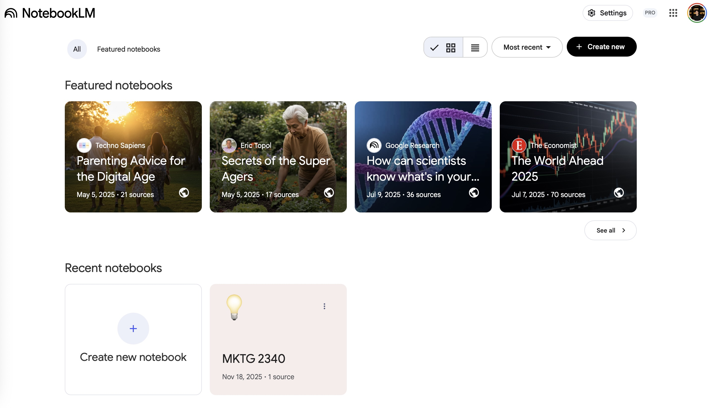
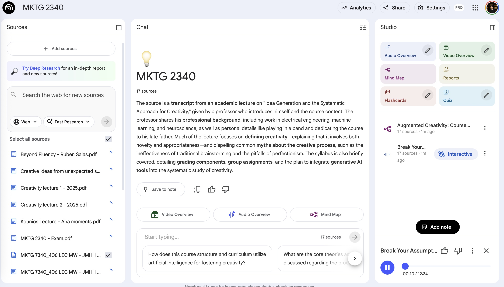

A Year of Gemini Pro: Testing NotebookLM
I got access to Gemini Pro for a year and decided to test Google’s NotebookLM for my upcoming MKTG exam. NotebookLM markets itself as an AI research assistant that grounds its responses in your uploaded sources—supposedly reducing hallucinations and providing more reliable study support.
I uploaded my lecture notes, course readings, and lecture transcripts to see if it actually lives up to the claims. Spoiler: I actually liked it.

NotebookLM’s interface with uploaded course materials
What I Uploaded
For my MKTG exam prep, I loaded NotebookLM with:
Lecture Notes: Typed notes from all lectures covering consumer behavior, market segmentation, brand positioning, and pricing strategies.
Course Readings: PDFs of assigned textbook chapters and case studies.
Lecture Transcripts: Auto-generated transcripts from recorded lectures (with professor’s verbal explanations and examples).
The total was probably 200+ pages of material. In the past, I’ve used Claude Projects for this, so I was curious how NotebookLM would compare. It took around 2 hours to load the material in.
How NotebookLM Actually Works
Source Grounding
The key feature: NotebookLM claims to only use information from your uploaded sources. When it answers questions, it provides citations showing exactly which document and section it pulled from.
I tested this by asking about a specific marketing framework we covered in class. NotebookLM gave me the answer and cited: “Lecture Notes, Week 4, Page 3” and “Consumer Behavior Reading, Chapter 7, Section 2.”
I checked the sources—it was accurate. The information came directly from those sections, not from generic marketing knowledge Gemini learned during training.
The Q&A Experience
I could ask specific questions like: - “How is creativity broadly defined in the course?” - “Explain the difference between attribute dependency and subsituttion in Systematic Innovation Theory (SIT)” - “What examples did the professor give for constraints leading to creativity?”
NotebookLM pulled answers from the uploaded materials and cited where each piece of information came from. This was more reliable than asking a general LLM, which might give textbook definitions that don’t match what my professor actually taught.
Cross-Reference Capability
One useful feature: NotebookLM could synthesize across multiple sources. When I asked about brand positioning, it pulled from: - Lecture notes (professor’s explanation) - Textbook reading (formal definition) - Lecture transcript (specific examples the professor gave verbally)
This created a more complete picture than each source individually.
The Audio Overview Feature
NotebookLM has a feature that generates an audio “podcast” summarizing your sources. I tried it with my MKTG materials.
What It Generated
The audio overview was two AI voices having a conversation about the key concepts from my notes: - Voice 1: “So let’s talk about market segmentation…” - Voice 2: “Right, and there are four main types covered in these materials…”
It was surprisingly natural-sounding and covered the main topics in a logical order.
Actually Useful for Review
I listened to the 10-minute audio summary while walking to class. It hit the major concepts and provided a good high-level review. This was genuinely helpful for: - Quick refreshers before class - Identifying which topics I needed to study more deeply - Hearing concepts explained conversationally rather than reading dense notes
Limitations of Audio Summaries
The audio overview was good for broad strokes but missed: - Specific formulas or calculations - Detailed case study analysis - Nuanced distinctions between similar concepts
It’s a supplementary review tool, not a replacement for actually studying the material.

NotebookLM’s audio overview feature generating podcast-style summaries
What Actually Worked Well
Accurate Source Attribution
The biggest advantage over general LLMs: NotebookLM tells you exactly where information comes from. When studying for an exam, you need to know what the professor actually taught, not what a generic AI thinks the answer should be.
The citations were consistently accurate. I spot-checked multiple answers and they matched the source material.
No Hallucinations (So Far)
I didn’t catch NotebookLM making up information. Because it’s constrained to uploaded sources, it can’t invent facts the way ChatGPT or Claude sometimes do.
When I asked about topics not covered in my materials, it said “I don’t have information about that in your sources” rather than making something up.
Understanding Context
The lecture transcripts included the professor’s verbal explanations and examples. NotebookLM could pull from these conversational explanations, which added context that wouldn’t be in formal textbook readings.
For example, when the professor said “this is important for the exam,” NotebookLM picked up on that emphasis.
Study Guide Generation
I asked NotebookLM to create a study guide covering key concepts. It generated: - Main topics organized by lecture - Important definitions - Examples from case studies - Connections between concepts
All sourced from my uploaded materials, formatted clearly.
Limitations
Can’t Handle Everything
NotebookLM struggled with: - Complex diagrams or charts (it could see them but didn’t fully understand them) - Handwritten notes (I had to use typed notes)
For a marketing class this was fine, but for quantitative subjects it might be more limited.
Limited Interactivity
Unlike Claude Projects where I could have extended back-and-forth conversations, NotebookLM felt more like a Q&A tool. It answered questions but didn’t build on previous context as naturally.
Relies on Source Quality
NotebookLM is only as good as what you upload. If your notes are incomplete or lecture transcripts are inaccurate (auto-transcription errors), the AI will work with flawed information.
Garbage in, garbage out.
No Proactive Suggestions
NotebookLM responds to questions but doesn’t proactively identify gaps in your knowledge or suggest what to study. It’s a passive tool that requires you to know what to ask.
NotebookLM vs. Claude Projects
I’ve used Claude Projects for similar purposes, so here’s how they compare:
Where NotebookLM Is Better
Source citations: More explicit about where information comes from
Audio summaries: The podcast-style overview is a unique feature Claude doesn’t have
Grounding discipline: Stays within uploaded sources more strictly
Where Claude Projects Is Better
Conversational depth: Claude handles multi-turn conversations better
Synthesis and analysis: Claude is better at making connections and generating insights beyond summarizing
Flexibility: Claude can go beyond sources when helpful; NotebookLM is rigidly constrained
Different Use Cases
Use NotebookLM for: Exam prep where you need to know exactly what’s in your course materials, no more, no less.
Use Claude Projects for: Research projects where you want the AI to synthesize across sources and generate new ideas.
For my MKTG exam, NotebookLM was the right tool. For writing papers or doing creative projects, Claude is probably better.
Is This Actually Better Than Traditional Study Methods?
What NotebookLM Adds
Organization: Pulls information from multiple sources more efficiently than manual cross-referencing
Quick reviews: Audio overviews provide fast refreshers
Finding information: Faster than Ctrl+F through multiple documents
What It Doesn’t Replace
Active recall: The act of retrieving information from memory without AI help
Deep understanding: NotebookLM can summarize, but you still need to understand underlying concepts
Practice problems: For quantitative subjects, you need to actually do practice problems
The Risk
The danger of tools like NotebookLM: they make it easy to feel like you’re studying without actually learning.
According to research on learning and retrieval practice, passive review (like asking an AI questions) is less effective than active retrieval (testing yourself without assistance).
NotebookLM is useful for organization and review, but shouldn’t replace traditional study methods like: - Self-testing without AI help - Explaining concepts to others - Working through practice problems - Creating your own summaries and connections
My Actual Study Approach
NotebookLM for Organization
I’m using NotebookLM at the beginning of exam prep: 1. Upload all materials 2. Generate study guide to identify main topics 3. Listen to audio overview for high-level understanding 4. Use Q&A to clarify confusing concepts
Traditional Methods for Learning
Then I switch to proven study techniques: - Create my own flashcards (without AI) - Self-test on major concepts - Practice explaining topics out loud - Work through case studies independently - Study with classmates
NotebookLM as Reference
I come back to NotebookLM when: - I need to verify a fact quickly - I can’t find something in my notes - I want to see how different sources explain the same concept
But the actual learning happens through traditional active study methods.
Final Assessment
I actually liked NotebookLM for exam prep. The source grounding is more reliable than general LLMs, the audio overview feature is genuinely useful, and the citations help verify information.
Best use cases: - Organizing large amounts of course material - Quick reviews and refreshers - Finding specific information across multiple documents - Creating initial study guides
Not good for: - Replacing active learning and retrieval practice - Complex mathematical or quantitative subjects - Creative synthesis beyond source material - Building deep conceptual understanding
For my MKTG exam specifically, NotebookLM was the right tool. It helped me organize content from lectures, readings, and transcripts efficiently. The audio overview gave me a quick review I could listen to while walking to class.
But I’m not relying on it as my primary study method. It’s a supplement to traditional studying, not a replacement.
The year of free Gemini Pro is nice, and I’ll keep using NotebookLM for course organization. But the actual studying—the hard work of learning and retaining information—still requires doing things the old-fashioned way: active recall, self-testing, and explaining concepts without AI help.
NotebookLM makes studying more efficient. It doesn’t make studying unnecessary.